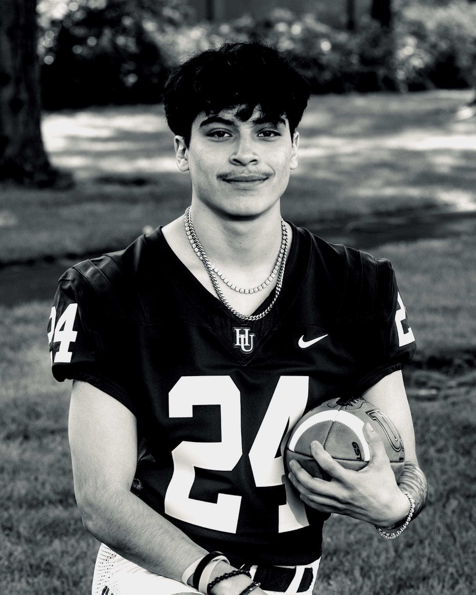

ABOUT ME

I'm a Business Management student at Hamline University with hands-on experience creating graphics for the Hamline Football program. My work spans game week, gameday, recruiting, and player-focused content, alongside independent sports design projects.
During my time at Hamline I played cornerback for the football team. I ended up losing my last two seasons to injury, but during this time I was introduced to the world of sports design. It had me hooked instantly and I pursue a career in creating for teams, organizations, and athletes.
Experience
Hamline Football
Graphic Design · 2025 contributions / 2026 internship
Athletics
Hamline University Football
NCAA Division III · Cornerback
Education
Hamline University
Business Management · Saint Paul, MN